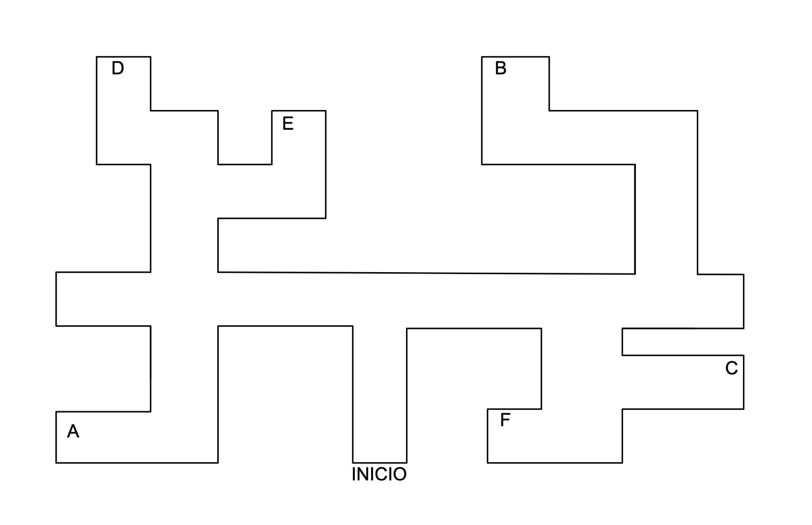

Jose esta en un laberinto y se mueve por el, sigue las pistas de las direcciones que toma para saber donde se encuentra y haz click en la opcion que corresponda al punto final. Usa el laberinto que se representa a continuacion para guiarte
1. Jose avanza caminando desde el inicio, dobla a la derecha, despues dobla a la izquierda, luego nuevamente dobla a la izquierda, y finalmente dobla a la derecha, ¿En que punto se encuentra?
2. Jose avanza caminando desde el inicio, primero dobla a la izquierda, despues vuelve a doblar a la izquierda y finalmente dobla a la derecha, ¿En que punto se encuentra?
3. Jose avanza caminando desde el inicio, primero dobla a la derecha, despues dobla nuevamente a la derecha y finalmente dobla a la izquierda ¿En que punto se encuentra?
4. Jose avanza caminando desde el inicio, primero dobla a la derecha, despues nuevamente dobla a la derecha y finalmente dobla a la derecha, ¿En que punto se encuentra?
5. Jose avanza caminando desde el inicio, primero dobla a la izquierda, despues dobla a la derecha, posteriormente dobla a la izquierda y finalmente, dobla a la derecha ¿En que punto se encuentra?